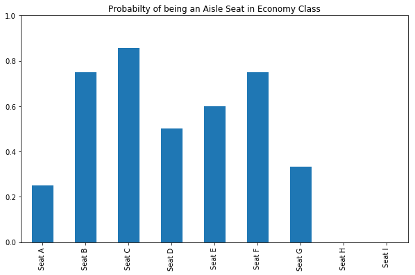

What Is The Probability An Economy Class Seat Is An Aisle Seat?
There are two types of people in the world, aisle seaters and window seaters. I am an aisle seater, nothing is worse than limited bathroom access on a long flight. The first thing I do when I get my ticket is check to see if I have a window seat. If not, I immediately head over to the airline counter and try to get one.
Last flight, on Turkish Airlines, I ran into a curious situation. I recieved my boarding pass with my seat number, 18C, but the ticket did not specify if C was an aisle seat or not. Making matters worse, the airline counter was swamped with a few dozen people. So I asked myself: given only the seat letter, C, what is the probability that it is an aisle seat?
Later, on the flight, I decided to find out.
Preliminaries
# Import required modules
import pandas as pd
import numpy as np
# Set plots to display in the iPython notebook
%matplotlib inlineSetup possible seat configurations
I am a pretty frequently flyer on a variety of airlines and aircraft. There are a variety of seating configurations out there, but typically they follow some basic rules:
- No window cluster of seats has more than three seats.
- On small flights with three seats, the single seat is on the left side.
- No flight has more than nine rows.
Based on these rules, here are the “typical” seating configurations from aircraft with between two and nine seats per row. A ‘1’ codifies that a seat is an aisle seat, a ‘0’ codifies that it is a non-aisle seat (i.e. window or middle), and ‘np.nan’ denotes that the aircraft has less than nine seats (this is so all the list lengths are the same).
# An aircraft with two seats per row
rows2 = [1,1, np.nan, np.nan, np.nan, np.nan, np.nan, np.nan, np.nan]
# An aircraft with three seats per row
rows3 = [1,1,0, np.nan, np.nan, np.nan, np.nan, np.nan, np.nan,]
# An aircraft with four seats per row
rows4 = [0,1,1,0, np.nan, np.nan, np.nan, np.nan, np.nan]
# An aircraft with five seats per row
rows5 = [0,1,1,0,0, np.nan, np.nan,np.nan, np.nan]
# An aircraft with six seats per row
rows6 = [0,1,1,1,1,0, np.nan, np.nan, np.nan]
# An aircraft with seven seats per row
rows7 = [0,1,1,0,1,1,0, np.nan, np.nan]
# An aircraft with eight seats per row
rows8 = [0,0,1,1,1,1,0,0, np.nan]
# An aircraft with nine seats per row
rows9 = [0,0,1,1,0,1,1,0,0]For example, in an aircraft with five seats per row, rows5, the seating arrangement would be:
- window
- aisle
- aisle
- middle
- window
- no seat
- no seat
- no seat
- no seat
Next, I’m take advantage of pandas row summation options, but to do this I need to wrangle the data into a pandas dataframe. Essentially I am using the pandas dataframe as a matrix.
# Create a list variable of all possible aircraft configurations
seating_map = [rows2, rows3, rows4, rows5, rows6, rows7, rows8, rows9]# Create a dataframe from the seating_map variable
df = pd.DataFrame(seating_map,
columns=['A', 'B', 'C', 'D', 'E', 'F', 'G', 'H', 'I'],
index=['rows2', 'rows3', 'rows4', 'rows5', 'rows6', 'rows7', 'rows8', 'rows9'])Here is all the data we need to construct our probabilities. The columns represent individual seat letters (A, B, etc.) while the rows represent the number of seats-per-row in the aircraft.
# View the dataframe
df| A | B | C | D | E | F | G | H | I | |
|---|---|---|---|---|---|---|---|---|---|
| rows2 | 1 | 1 | NaN | NaN | NaN | NaN | NaN | NaN | NaN |
| rows3 | 1 | 1 | 0.0 | NaN | NaN | NaN | NaN | NaN | NaN |
| rows4 | 0 | 1 | 1.0 | 0.0 | NaN | NaN | NaN | NaN | NaN |
| rows5 | 0 | 1 | 1.0 | 0.0 | 0.0 | NaN | NaN | NaN | NaN |
| rows6 | 0 | 1 | 1.0 | 1.0 | 1.0 | 0.0 | NaN | NaN | NaN |
| rows7 | 0 | 1 | 1.0 | 0.0 | 1.0 | 1.0 | 0.0 | NaN | NaN |
| rows8 | 0 | 0 | 1.0 | 1.0 | 1.0 | 1.0 | 0.0 | 0.0 | NaN |
| rows9 | 0 | 0 | 1.0 | 1.0 | 0.0 | 1.0 | 1.0 | 0.0 | 0.0 |
Calculate aisle probability
Because each aircraft seats-per-row configuration (i.e. row) is binary (1 if aisle, 0 if non-aisle), the probability that a seat is an aisle is simply the mean value of each seat letter (i.e. column).
# Create a list wherein each element is the mean value of a column
aisle_probability = [df['A'].mean(),
df['B'].mean(),
df['C'].mean(),
df['D'].mean(),
df['E'].mean(),
df['F'].mean(),
df['G'].mean(),
df['H'].mean(),
df['I'].mean()]# Display the variable
aisle_probability[0.25, 0.75, 0.8571428571428571, 0.5, 0.6, 0.75, 0.3333333333333333, 0.0, 0.0]
So there you have it, the probability that each seat letter is an aisle. However, we can make the presentation a little more intituative.
Visualize seat letter probabilities
The most obvious visualization to convey the probabilities would be seat letters on the x-axis and probabilities on the y-axis. Panda’s plot function makes that easy.
# Create a list of strings to use as the x-axis labels
seats = ['Seat A', 'Seat B', 'Seat C', 'Seat D',
'Seat E', 'Seat F', 'Seat G', 'Seat H', 'Seat I']# Plot the probabilities, using 'seats' as the index as a bar chart
pd.Series(aisle_probability, index=seats).plot(kind='bar', # set y to range between 0 and 1
ylim=[0,1],
# set the figure size
figsize=[10,6],
# set the figure title
title='Probabilty of being an Aisle Seat in Economy Class')<matplotlib.axes._subplots.AxesSubplot at 0x10f1231d0>

So there we have it! If given a boarding pass with seat C you have a 86% probability of being in an aisle seat!
I hope this was helpful!